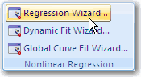

Using the Regression Wizard
The first step for using the Regression Wizard is to select the data source.
- View the page or worksheet with the data you want to fit.
-
If you select a graph, right-click
the curve you want fitted, and on the shortcut menu, click
Fit Curve.
Remember: If you are running a regression from the graph page, make sure you select the plot itself, not the graph, or Fit Curve will not appear on the shortcut menu.
-
If you are using a worksheet, select
the variables in the worksheet you want to fit, then on the
Analysis tab, in the
Nonlinear Regression group, click
Nonlinear Regression.
